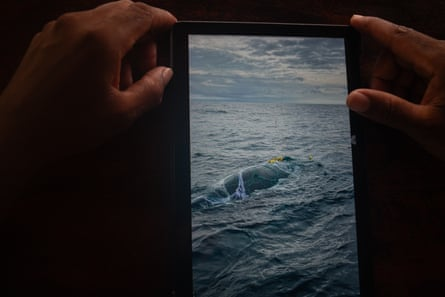
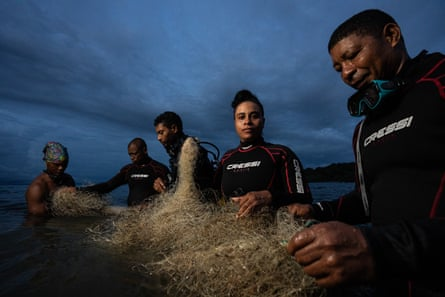
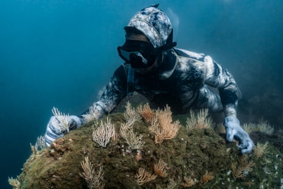
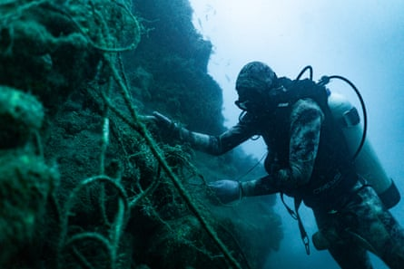
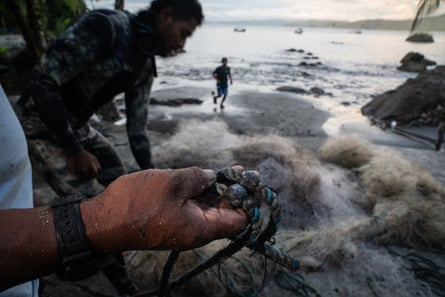
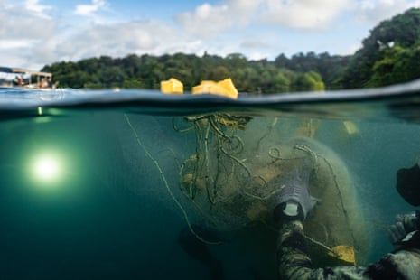

A fter a day of scuba diving, Luis Antonio “Toño” Lloreda was exhausted. Then a friend brought urgent news. “Toño, man, there’s a whale caught in a net out there.” Lloreda, 43, had freed other, smaller wildlife from fishing nets but this would be his first marine animal of such size.
The four to five metres-long juvenile humpback, accompanied by its mother, had a net studded with hooks wrapped around its fin and mouth. One wrong move could have been fatal for Lloreda or the whale.
“To connect with the whale, I used what we call intuitive interspecies communication,” says Lloreda, explaining that this involves non-verbal, energetic communication. “I asked the mother for permission – energetically,” he says. “At first, she didn’t want our help. But when I showed her we meant no harm, she let us in.
Luis Antonio ‘Toño’ Lloreda holds a photo of the whale he freed from a fishing net
“She positioned herself below us. Then I asked the calf. When the calf became very still, I reached into her mouth and removed the net.” The mother and calf swam for 50 metres before pausing to rest.
Lloreda is one of nine Guardianes del Mar (Guardians of the Sea), a grassroots African-Colombian collective from six coastal communities around Colombia’s Gulf of Tribugá, a biodiversity hotspot on the Pacific coast that spans 600,000 hectares of ocean, forest and mangroves. The region, where dense Chocó rainforest meets the ocean, is a Unesco biosphere reserve and is designated a “ hope spot ” by the non-profit organisation Mission Blue for its ecological significance.
From left: Guardians of the sea Lloreda, Benjamin Gonzales, Camilo Morante, Neyi Ibargüen and Diego
Scuba diving is crucial for identifying and removing ghost fishing gear – lost or abandoned commercial nets made mostly of near-indestructible plastics – but it is prohibitively expensive. With sponsorship from Ecomares and Conservation International, Lloreda and his colleagues have trained not only in diving, but in removing fishing gear from coral with quick, precise and safe techniques.
Many guardians double as coral gardeners and reef surveyors, collecting data for both their communities and scientific partners. Three, including Lloreda, are trained to free marine animals.
The guardians also act as coral gardeners and reef surveyors
According to WWF, 50,000 tonnes of fishing gear are lost or abandoned in the oceans globally each year. These “ghost nets” drift across borders, ensnaring coral, turtles, sharks – and whales. In the Gulf of Tribugá alone, Guardianes del Mar estimates that 3-4 humpback whales become entangled each year.
Since its formal launch in 2023, the group says it has removed more than 120kg of ghost gear – 700kg if you include efforts since 2017. Learning to dive has been essential to the community’s efforts to protect their environment, says Neyi Ibargüen, 32, the gulf’s first certified female diver. “Wherever ghost gear lands becomes a cemetery. But we can’t save what we can’t see.”
Guardianes del Mar is working to certify more local divers so they can have a greater impact. But it faces mounting logistical and financial hurdles.
Morante, scissors in hand, removes fishing rope from the coral
“We used to send the nets to Buenaventura for recycling, but fuel costs are too high,” says Benjamin Gonzales, 53, one of the senior guardians. There are no roads – the communities are connected mainly by boat – so any rubbish or recycling must be transported out by boat or plane.
Today, the nets are repurposed into bracelets and sold in Germany and locally in Nuquí, the main coastal municipality. Lead weights are melted down into new dive weights for the local shop, run by Guardianes del Mar advocate Liliana Arango.
The spirit of mutual care between people and nature runs deep in Tribugá, where the population numbers about 7,000. African-Colombian communities here are descended from formerly enslaved people who escaped Spanish rule and crossed the jungle to reach the coast. They were welcomed by the Indigenous Emberá, and today co-govern the region through a state-recognised model of local autonomy.
A recently recovered net is loaded with weights, which can be melted down into new dive weights
This community-led stewardship not only helps tackle ghost nets but was crucial in defeating plans to build a deepwater port in Tribugá – a development that would have brought roads, industry and irreversible damage to the area.
“We saw how the port in Buenaventura changed everything – more violence, displacement, pollution. We didn’t want that here,” says Camilo Morante, 25, the youngest guardian and the group’s legal representative.
Buenaventura, 200km south of the Gulf of Tribugá, became Colombia’s largest Pacific port after privatisation in the 1990s. Promises of development never materialised. Instead, crime and poverty surged, prompting mass protests in 2017 and 2021.
Morante knows the strength of everyone working together and how much it has helped the guardians.
“Everyone in this community fishes, so we can’t tell anyone to stop using nets,” he says. “The most important thing is that we raise consciousness locally so that we understand the consequences of our actions.
With one end tethered to the boat in the distance, Morante has the task of rolling up the massive net